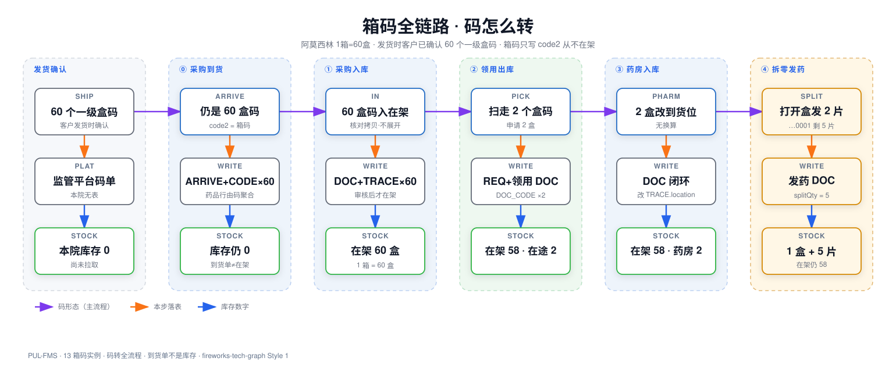

跟着 60 盒阿莫西林走一遍：从供应商的仓库，到医院的中心库，到门诊药房，再到病人手里。规格：1 箱 = 60 盒，1 盒 = 7 片。读完这一页，不需要任何技术背景。
一、先懂一件事：药在搬家
物理世界只发生一件事：药在三个地方之间搬家——供应商的仓库 → 医院的库房 → 药房的药架 → 病人手里；偶尔也往回搬（退货、退库、退药）。搬家就是全部真相，系统里只有三种记录：
三段链路地图
全程就三段路。蓝实线 = 正向，橙虚线 = 逆向。后面「分」的部分按这三段走一遍。
码的视角看全程
读这张图只记三件事：码变成什么形态 → 写进哪张表 → 库存变几。到货单不算库存；箱码只挂在 60 条盒码的 code2 上，自己永远不占库存。

全屏看图 · 发货时供应商已逐盒确认，医院入库只核对，不再逐个展开。
二、三条铁律
看懂这三句，后面的表全是它们的印证。论证默认收起，想看再展开。
铁律一 · 码上不带单位。药定「按什么算账」（药品主表 baseUnit = 盒），码定「是哪层包装」，追溯码只是「哪一盒」。约定了 1 个一级码 = 1 盒，所以数在架的码有几行，就知道有几盒。
展开：单位到底存在哪 · 20 位码怎么拆
DRUGS.baseUnit，本例 = 盒。申请数量、库存数字都按它。
最小卖单位标识码表里 level=1 那条的 packUnit，就是最小销售包装。约定：应等于 baseUnit。本例 = 盒。
这一码是哪层标识码 IDCODES.packUnit。一种药可有多级：level=1 盒、level=2 箱、level=3 大箱。扫到哪级，这码就代表哪层。
码上带单位吗不带。20 位 = 7 位标识码 + 9 位序列 + 4 位校验。单位靠前 7 位去查标识码，再连到药品主表换算。
那「片」呢比盒还小，叫拆零单位 DRUGS.minUnit（1 盒 = 7 片）。只在药房拆零时算，不算库存基本单位，片也没有自己的码。
■ 标识码 7 位 → 查 IDCODES（本例是箱，level=2） ■ 序列号 9 位 → 这一箱的唯一号 ■ 校验 4 位
铁律二 · 库存是算出来的：在架 = 进来的码 − 出去的码。进来的看已审核入库单，出去的看已审核出库单；已出库但药房还没点收的，叫「在途」。
展开：正向认码，反向算药
TRACE_CODE 只增不删、也不打状态——同一条码会同时出现在入库单和出库单上，这叫「码随单转」。文末「五时刻对照表」就是这个公式的逐步推演。
铁律三 · 码表没有 status 字段——流水为王，缓存为奴。就像银行账户：流水是真账，余额是照着流水现算的；不存余额，就永远不用跟自己对账。
展开：三问判断 + 什么时候再加缓存
给它单存一个 status，等于把算好的数再抄一份——抄出来的副本就是缓存，缓存会跟真账对不上。加不加缓存，用三问判断：
| 缓存三问 | 纯推导（本设计） | 加 status 字段 |
|---|---|---|
| 查询成本 | 集合差，毫秒级（在架 10⁵ 码规模） | O(1) 点查，但省的不是瓶颈 |
| 一致性 | 天然一致——没有第二份数据可错 | 审核双写（单据+码状态），写一半崩 = 静默错账 |
| 可重建 | 无需重建 | 能重建，但得先发现它错了 |
但不是一刀切。有些字段就是缓存，比如 location（在哪）、splitQty（拆零剩几片）——它们是「单码高频点查」，每次现算太亏。而在架 / 在途是「集合加减」，SQL 本来就算得快，保持现算。代价也得认：① 推导只写一个函数，全系统复用；② 每加一种单据，登记它是加还是减；③ 出库审核前现查这码刚动过没，防重复出库。
什么时候再回头加缓存：跨院区看板要秒开、流水破千万行、外部系统老来查、盘点要锁快照。到那时加物化视图 + 对账任务，但记住「流水为王，缓存为奴」：缓存随时能删了重建，流水一行都不许改。完整论证见 docs/decisions/2026-09/2026-09-28-no-status-field-on-trace-code.md。
三、第一段路 · 供应商 ⇄ 库房
药从供应商搬到中心库。两个时点：到货不动账，入库审核才开始占库存。
到货 · 货在门口，还不是库存
供应商发货时已逐盒确认 60 个盒码，医院从监管平台拉取到货单、只核对不拆箱。凭证：到货单——只是「货在路上了」的凭证，码还只在到货单上。
入库 · 核对后开始占库存
60 个盒码拷进入库单，扫一下箱码就能一次核对 60 个子码。凭证：采购入库单——审核之后，60 个码才写进码表、开始占库存。
↩ 逆向 · 退货给供应商。近效期、质量问题或召回时，药从中心库搬回供应商。凭证：采购退货单——采购入库单的镜像。退货单绑哪些盒码，哪些码就随单离开在架；码表照旧不删行、不改状态，公式不用改，退货单也是「出去的码」。
四、第二段路 · 库房 ⇄ 药房 / 病区
因果链只有一条：申请（可选）→ 备货拣货（不动账）→ 审核出库（扣账时点）→ 药房收货（闭环）。病区领药同构——对库房来说，药房和病区都是「领用方」。
领用出库 · 药房申请 2 盒（扣账时点）
申请说的是「要 2 盒」（药的口径），库房备货扫的是 2 个具体盒码（码的口径）。凭证：领用申请单（可选）→ 领用出库单——审核即扣账，码离开在架、进入「在途」。
药房收货 · 领用单闭环
门诊药房逐码点收那 2 盒。没有数量变化，只是「货到了药房」：凭证：领用单闭环——单状态改为「药房已入库」，码的位置从库房库位改到药房货位。
↩ 逆向 · 药房退库。领错、多用或停用的药搬回库房。凭证两张接力：退回出库单（药房开出，扫码确认出库）→ 退回入库单（库房核对回架）——和正向「领用出库 → 药房收货」正好镜像。码的位置改回库房库位，库房在架自动回升，还是那句公式。
五、第三段路 · 药房 ⇄ 病人
药从药架到病人手里。特殊之处：片没有身份证（没有独立追溯码），拆零不能把 1 个盒码拆成 7 行，只能在原盒码上记「还剩几片」。
拆零发药 · 打开 1 盒发出 2 片 推荐口径 · 待设计
处方「阿莫西林 2 片」：药师打开盒码 …0001，倒出 2 片，盒内剩 5 片；另一盒没动。凭证：发药单——发出的片数记在单上，剩余片数回写原盒码。
↩ 逆向 · 病人退药。医嘱变更、不良反应时，药从病人手里退回药房。凭证：处方退药单——选已发处方、核对码清单、确认退药，处方改「已退药」。整盒未拆 → 码直接回药房在架；已拆零的片 → 数量回补到盒码上。能不能再发由药师看外观与效期人工判定，不可再用的走损耗、不回在架。
六、对照：五个时刻算一遍
盯住两列就够：码表永远 60 行（只增不删）；「库房在架」就是那句公式——进来的 − 出去的。
| 时刻 | ARRIVE_CODE | TRACE_CODE 行数 | 库房在架 | 在途 | 药房整盒 | 药房已拆 |
|---|---|---|---|---|---|---|
| 1.1 到货后 | 60 | 0 | 0 | 0 | 0 | — |
| 1.2 入库审核后 | 60（已下载） | 60 | 60 盒 | 0 | 0 | — |
| 2.1 出库审核后 | 60 | 60（不删行） | 58 盒 | 2 盒 | 0 | — |
| 2.2 药房收货后 | 60 | 60 | 58 盒 | 0 | 2 盒 | — |
| 3.1 拆零发 2 片后 | 60 | 60 | 58 盒 | 0 | 1 盒 | 1 盒（剩 5 片） |
第 1 盒码的一生（去过哪些表）
跟着第 1 盒的码 69341720001000010001，看它这一辈子碰过哪些表：
| 时刻 | DRUGS | IDCODES | ARRIVE / CODE | TRACE_CODE | DOC | DOC_CODE | REQ |
|---|---|---|---|---|---|---|---|
| 字典 | 阿莫西林 1 行 | 箱+盒各 1 行 | — | — | — | — | — |
| 1.1 到货 | 只读 | 只读 | 插入该盒码 | — | — | — | — |
| 1.2 入库 | 只读 baseUnit=盒 | 前 7 位命中盒码 | downloaded=是 | 插入该行 | 采购入库单 | 入库单 × 该码 | — |
| 2.1 出库 | 只读 | 只读 | 只读 | 行还在 | 领用出库单 | 出库单 × 该码 | 申请 2 盒 |
| 2.2 收货 | 只读 | 只读 | 只读 | 改 location | 改状态 | 不新增 | — |
| 3.1 拆零 | 只读 minUnit | 只读 | 只读 | split=是, qty=5 | 发药单 | 发药单 × 该码 | — |
那个箱码 69341800000000010001 从头到尾只挂在 60 条盒码的 code2 上，自己从没单独占过库存。
Markdown 源：12-box-code-instance.md · 表结构图：图纸清单里的「12 表结构 ER」